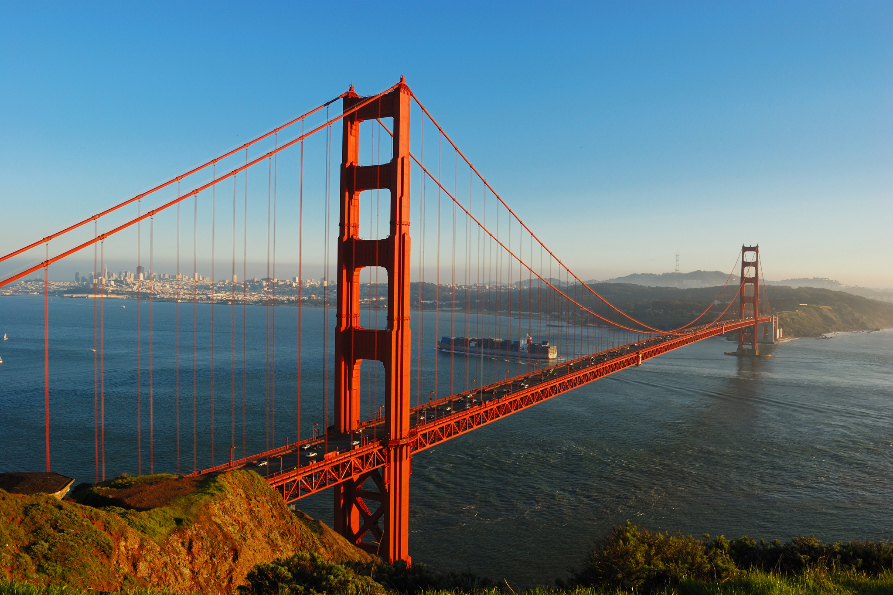
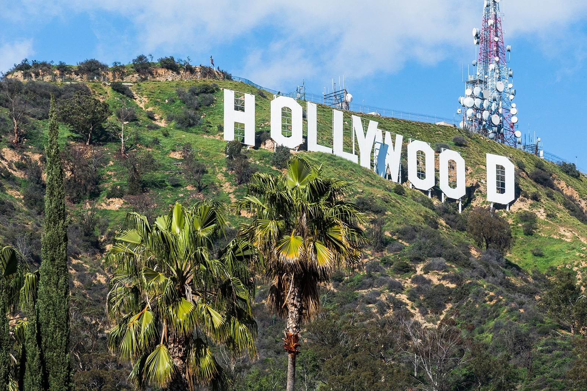
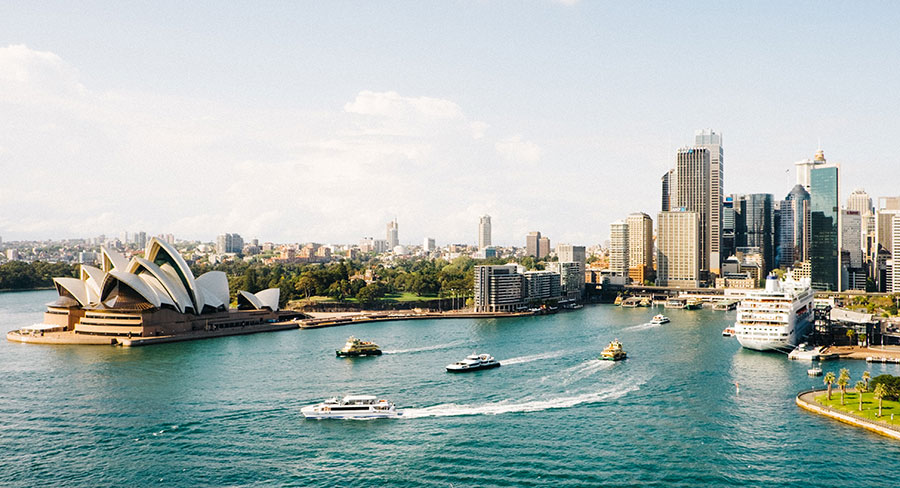

San Diego
San Diego is a city in the U.S. state of California on the coast of the Pacific Ocean,
approximately 120 miles (190 km) south of Los Angeles and immediately adjacent to the border with Mexico.
With an estimated population of 1,423,851 as of July 1, 2019,
San Diego is the eighth-largest city in the
United States and second-largest in California.
It is part of the San Diego–Tijuana conurbation, the second-largest transborder agglomeration between the
U.S. and a bordering country after
Detroit–Windsor, with a population of 4,922,723 people.
The city is known for its mild year-round climate, natural deep-water harbor, extensive beaches, l
ong association with the United States Navy, and recent emergence as a healthcare and
biotechnology development center.
approximately 120 miles (190 km) south of Los Angeles and immediately adjacent to the border with Mexico.
With an estimated population of 1,423,851 as of July 1, 2019,
San Diego is the eighth-largest city in the
United States and second-largest in California.
It is part of the San Diego–Tijuana conurbation, the second-largest transborder agglomeration between the
U.S. and a bordering country after
Detroit–Windsor, with a population of 4,922,723 people.
The city is known for its mild year-round climate, natural deep-water harbor, extensive beaches, l
ong association with the United States Navy, and recent emergence as a healthcare and
biotechnology development center.
London
This article is about the capital city.
For the region and county of England, see Greater London.
For the historic city and financial district within London, see City of London. For other uses,
see London (disambiguation).
London is the capital and largest city of England and the United Kingdom.
Standing on the River Thames in the south-east of England, at the head of its 50-mile
(80 km) estuary leading to the North Sea, London has been a major settlement for two millennia.
Londinium was founded by the Romans.
The City of London, London's ancient core − an area of just 1.12 square miles and colloquially
known as the Square Mile − retains boundaries that closely follow its medieval limits.
The City of Westminster is also an Inner London borough holding city status.
London is governed by the Mayor of London and the London Assembly.
For the region and county of England, see Greater London.
For the historic city and financial district within London, see City of London. For other uses,
see London (disambiguation).
London is the capital and largest city of England and the United Kingdom.
Standing on the River Thames in the south-east of England, at the head of its 50-mile
(80 km) estuary leading to the North Sea, London has been a major settlement for two millennia.
Londinium was founded by the Romans.
The City of London, London's ancient core − an area of just 1.12 square miles and colloquially
known as the Square Mile − retains boundaries that closely follow its medieval limits.
The City of Westminster is also an Inner London borough holding city status.
London is governed by the Mayor of London and the London Assembly.

New York City
New York City , often called New York , is the most populous city in the United States.
With an estimated 2019 population of 8,336,817 distributed over about 302.6 square miles .
New York is also the most densely populated major city in the United States.
Located at the southern tip of the U.S. state of New York,
the city is the center of the New York metropolitan area,
the largest metropolitan area in the world by urban landmass.
With almost 20 million people in its metropolitan statistical area and approximately 23 million in
its combined statistical area, it is one of the world's most populous megacities.
New York City has been described as the cultural, financial, and media capital of the world,
significantly influencing commerce, entertainment, research, technology, education, politics,
tourism, art, fashion, and sports. Home to the headquarters of the United Nations,New York is
an important center for international diplomacy.
With an estimated 2019 population of 8,336,817 distributed over about 302.6 square miles .
New York is also the most densely populated major city in the United States.
Located at the southern tip of the U.S. state of New York,
the city is the center of the New York metropolitan area,
the largest metropolitan area in the world by urban landmass.
With almost 20 million people in its metropolitan statistical area and approximately 23 million in
its combined statistical area, it is one of the world's most populous megacities.
New York City has been described as the cultural, financial, and media capital of the world,
significantly influencing commerce, entertainment, research, technology, education, politics,
tourism, art, fashion, and sports. Home to the headquarters of the United Nations,New York is
an important center for international diplomacy.

Los Angeles
Los Angeles lies in a basin in Southern California, adjacent to the Pacific Ocean,
with mountains as high as 10,000 feet (3,000 m), and deserts.
The city, which covers about 469 square miles is the seat of Los Angeles County,
the most populous county in the United States.
The Los Angeles metropolitan area (MSA) is home to 13.1 million people,
making it the second-largest metropolitan area in the nation after New York.
Greater Los Angeles includes metro Los Angeles as well as the Inland Empire and Ventura County.
It is the second-most populous U.S. combined statistical area,
also after New York, with a 2015 estimate of 18.7 million people.
with mountains as high as 10,000 feet (3,000 m), and deserts.
The city, which covers about 469 square miles is the seat of Los Angeles County,
the most populous county in the United States.
The Los Angeles metropolitan area (MSA) is home to 13.1 million people,
making it the second-largest metropolitan area in the nation after New York.
Greater Los Angeles includes metro Los Angeles as well as the Inland Empire and Ventura County.
It is the second-most populous U.S. combined statistical area,
also after New York, with a 2015 estimate of 18.7 million people.

Australia
Australia, officially the Commonwealth of Australia,
is a sovereign country comprising the mainland of the Australian continent,
the island of Tasmania, and numerous smaller islands.
It is the largest country in Oceania and the world's sixth-largest country by total area.
The population of 26 million is highly urbanised and heavily concentrated on the eastern seaboard.
Australia's capital is Canberra, though its largest city is Sydney.
The country's other major metropolitan areas are Melbourne, Brisbane, Perth, and Adelaide.
is a sovereign country comprising the mainland of the Australian continent,
the island of Tasmania, and numerous smaller islands.
It is the largest country in Oceania and the world's sixth-largest country by total area.
The population of 26 million is highly urbanised and heavily concentrated on the eastern seaboard.
Australia's capital is Canberra, though its largest city is Sydney.
The country's other major metropolitan areas are Melbourne, Brisbane, Perth, and Adelaide.

Thailand
Thailand officially the Kingdom of Thailand and formerly known as Siam,
,br>is a country in Southeast Asia.
Located at the centre of the Indochinese Peninsula,
it is composed of 76 provinces, and covers an area of 513,120 square kilometres,
and a population of over 66 million people.
Thailand is the world's 50th-largest country by land area, and the 22nd-most-populous country in the world.
The capital and largest city is Bangkok, a special administrative area.
Thailand is bordered to the north by Myanmar and Laos, to the east by Laos and Cambodia,
to the south by the Gulf of Thailand and Malaysia,
and to the west by the Andaman Sea and the southern extremity of Myanmar.
Its maritime boundaries include Vietnam in the Gulf of Thailand to the southeast,
and Indonesia and India on the Andaman Sea to the southwest. Nominally,
Thailand is a constitutional monarchy and parliamentary democracy; however,
in recent history, its government has experienced multiple coups and periods of military dictatorships.
Located at the centre of the Indochinese Peninsula,
it is composed of 76 provinces, and covers an area of 513,120 square kilometres,
and a population of over 66 million people.
Thailand is the world's 50th-largest country by land area, and the 22nd-most-populous country in the world.
The capital and largest city is Bangkok, a special administrative area.
Thailand is bordered to the north by Myanmar and Laos, to the east by Laos and Cambodia,
to the south by the Gulf of Thailand and Malaysia,
and to the west by the Andaman Sea and the southern extremity of Myanmar.
Its maritime boundaries include Vietnam in the Gulf of Thailand to the southeast,
and Indonesia and India on the Andaman Sea to the southwest. Nominally,
Thailand is a constitutional monarchy and parliamentary democracy; however,
in recent history, its government has experienced multiple coups and periods of military dictatorships.